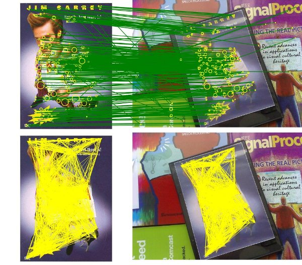

matching¶
Nearest neighbor search¶
We provide a generic interface to perform:
- Nearest neighbor search (NNS)
- K-Nearest Neighbor (K-NN)
Three implementations are available:
- a Brute force,
- an Approximate Nearest Neighbor [FLANN],
- a Cascade hashing Nearest Neighbor [CASCADEHASHING].
This module works for data of any dimensionality, it could be use to match:
- 2 or 3 vector long features (points),
- 128, 64, vector long features (like global/local feature descriptors).
Using the Nearest neighbor search (NNS) let you find pairs of elements ((i,j)) from sets A and B that are the closest for a given metric d:
\[\lbrace (P^i_A,P^j_B): j = \underset{k} {\mathrm{argmin}} \quad d(\text{desc}(P^i_A), \text{desc}(P^k_B)) \rbrace\]
Using the K-NN will return you tuple of elements: (i;(j,k)) if 2 nearest values have been asked for the Inth query.
Example of usage:
// Setup the matcher
ArrayMatcherBruteForce<float> matcher;
// The reference array
float array[] = {0, 1, 2, 3, 4};
// Setup the reference array of the matcher
matcher.Build(array, 5, 1);
//--
// Looking for the nearest neighbor:
//--
// Perform a query to look which point is closest to 1.8
float query[] = {1.8f};
int nIndice = -1;
float fDistance = -1.0f;
matcher.SearchNeighbour(query, &nIndice, &fDistance);
// nIndice == 2 ; // index of the found nearest neighbor
// fDistance == 0.4; // squared distance
//--
// Looking for the K=2 nearest neighbor
//--
IndMatches vec_nIndices;
vector<float> vec_fDistance;
const int K = 2;
matcher.SearchNeighbours(query, 1, &vec_nIndices, &vec_fDistance, K);
// vec_nIndices = {IndMatch(0,2), IndMatche(0,1)};
Metric customization¶
- L2 (used by default):
\[d(x,y):=\| x-y \|_2\]
- i.e L1 for binary descriptor (Hamming distance),
\[d(x,y) = \sum(x \oplus y)\]
- user customized distance (L1, ...).
Image domain, correspondences filtering (KVLD)¶
When used with descriptors found putative matches can be filtered thanks to different filters:
- Symmetric distance (Left-Right check).
- Keep only mutal correspondences: a match is kept if it is the same in the A->B and B->A order.
\[\lbrace (P^i_A,P^j_B): j = \underset{k} {\mathrm{argmin}} ~ d(\text{desc}(P^i_A), \text{desc}(P^k_B)), i = \underset{k} \min ~ d(\text{desc}(P^k_A), \text{desc}(P^j_B))
\rbrace\]
- “Nearest Neighbor Distance Ratio” distance check can be performed to remove repetitive elements.
- As many nearest points have been asked we can measure the similarity between the N-nearest neighbor. If the ratio of distance is inferior to a threshold
\deltathe match is kept else it is rejected (since the risk of confusion is higher). It allows to avoid ambiguous correspondences.\deltais often chosen between0.6and0.8.
- As many nearest points have been asked we can measure the similarity between the N-nearest neighbor. If the ratio of distance is inferior to a threshold
\[\begin{split}\lbrace (P^i_A,P^j_B): j = \underset{k} {\mathrm{argmin}} ~ d(\text{desc}(P^i_A), \text{desc}(P^k_B)) < \delta \underset{k\neq j} \min ~ d(\text{desc}(P^i_A), \text{desc}(P^k_B))
\rbrace\end{split}\]
- K-VLD Filter (K-Virtual Line Descriptor) [KVLD12]
- A virtual segment (a segment/line between two points) is kept if at least one of it’s supporting point is linked to K virtual segments. It produces a coherent photometric graph of the features from the set of points
AandB. Below: Top (SIFT putative matches found by NNS), Bottom: K-VLD coherent matches.
- A virtual segment (a segment/line between two points) is kept if at least one of it’s supporting point is linked to K virtual segments. It produces a coherent photometric graph of the features from the set of points
